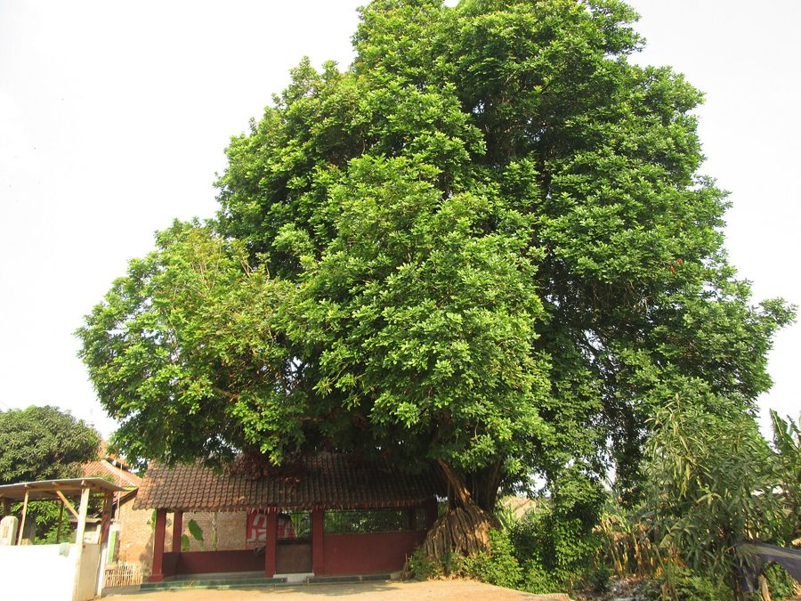

कुसुमKusum
Schleichera oleosa · Sapindaceae · FLR-0163

- Scientific name
- Schleichera oleosa (Lour.) Oken
- Family
- Sapindaceae
- Hindi
- कुसुम
- Local names
- kusum, kusam, kosum, lac tree, ceylon oak
- Status here
- native
- Movement
- Resident, here all year
- IUCN
- not evaluated
- Review
- audited and independently read
When to look कब देखें
Present all year.
Uses and possibilities उपयोग और संभावनाएँ
Drawn from the documented uses in the profile below, where each is labelled traditional, current or a research lead. All uses →
कुसुम / Kusum
Schleichera oleosa (Lour.) Oken — Sapindaceae
कुसुम — वह पेड़ जिस पर लाख का कीड़ा पाला जाता है। बीजों से तेल निकाला जाता है। सूखी और नम दोनों जमीन में उगता है। पत्तियाँ पंखनुमा। फूल छोटे पीले। फल छोटा, गोल, सख्त। लाख का काम अब कम हो गया है, लेकिन यह पेड़ अभी भी महत्वपूर्ण है।
Quick Identification त्वरित पहचान
| Feature | Description |
|---|---|
| Size | Deciduous tree 5–12 m tall, with a spreading crown |
| Leaves | Pinnate, 20–40 cm, with 6–12 pairs of leaflets, each 3–8 cm |
| Flowers | Small, pale yellow, in terminal panicles, March–April |
| Fruit | Small, globose drupe, 1–1.5 cm, brown when ripe |
| Bark | Grey-brown, rough, scaly |
| Seed | Hard, oily |
| The test | Crush a leaf; it has a mild, distinctive aromatic scent |
Field tip: In dry woodlands, look for a medium tree with pinnate leaves and small pale yellow flowers in spring. The tree is valued for lac production, and you may see scale insects on the twigs.
हिंदी — कैसे पहचानें: पेड़ मध्यम, पंखनुमा पत्तियाँ। पीले फूल। फल छोटा, गोल, कड़ा। लाख के कीड़े तने पर।
Morphology आकारिकी
Biometrics (cultivated and wild trees, dry deciduous forests):
| Measurement | Range |
|---|---|
| Height | 5–12 m |
| Trunk diameter | 20–50 cm |
| Leaf length | 20–40 cm |
| Leaflet | 3–8 × 1.5–3 cm |
| Flower length | 0.3–0.5 cm |
| Fruit diameter | 1–1.5 cm |
Trunk and bark: Straight to crooked, with grey-brown, rough, scaly bark. Wood is moderately hard.
Leaves: Alternate, pinnate, with 6–12 pairs of opposite or alternate leaflets. Leaflets are elliptic to oblong, entire or slightly toothed.
Flowers: Small, pale yellow, unisexual, in terminal panicles.
Fruit: A small, globose drupe 1–1.5 cm in diameter, brown when ripe, with a single hard seed rich in oil.
हिंदी: पत्ती पंखनुमा, 6-12 जोड़ी पत्तियों की। फूल पीले, छोटे। फल गोल, कड़ा, तेल वाला बीज।
Behaviour & Ecology व्यवहार and पारिस्थितिकी
Kusum is a tree of dry deciduous forests and woodlands across tropical Asia, from India to Indonesia. It grows on a range of soils and is drought-hardy. The flowers are visited by insects in the warm season. The fruit is taken by birds and small mammals. The tree is the primary host of the lac insect (Kerria lacca), making it economically important.
The seeds are rich in oil and are harvested for oil extraction. The tree is also valued for fuel wood and is lopped for fodder in dry seasons.
हिंदी: सूखे जंगलों का पेड़। लाख के कीड़े इस पर पाले जाते हैं। बीज तेल देते हैं। ईंधन भी अच्छा है। पशुओं को पत्ती खिलाई जाती है।
Life Cycle / Phenology जीवन चक्र
| Month / season | Event |
|---|---|
| December–February | Leaf fall; bare tree |
| March–April | New leaf flush; flowering |
| May–June | Fruit sets; young berries green |
| July–August | Fruit ripens and falls; seeds collected for oil |
| 4–5 years from seed | First flowering |
Seeds are best sown fresh. Lifespan reaches 40–60 years or more.
हिंदी: मार्च-अप्रैल में फूल। गर्मी में फल। दिसंबर-फरवरी में पत्तियाँ गिरती हैं। 4-5 साल में फूल आता है।
Associated Species / Interactions संबंधित प्रजातियाँ
- Lac host: Lac Insect is reared on kusum (and khair) wood for lac production.
- Pollinators: Insects visit the flowers.
- Frugivores: Birds and small mammals feed on the fruit.
Pests and Diseases कीट और रोग
- The Lac Insect is the primary "pest" (though economically valuable in lac production).
- Other scale insects on twigs.
- No significant fungal diseases in dry climates.
Agricultural / Human Relevance कृषि प्रासंगिकता
Traditional and Ethnobotanical Use (documented uses; not medical advice):
- Lac host. Kusum is one of the primary host trees for the lac insect. Lac is resinous secretion used for shellac, dyes, and other products.
- Seed oil. The seeds are rich in oil (15–25% by weight) and are pressed for kusum oil, used in cosmetics, soap-making, and lighting.
- Timber. Wood is used for fuel and small implements.
- Fodder. Leaves are lopped for livestock in dry seasons.
Today. Kusum oil is traded in the cosmetic and soap industries. Lac production on kusum is smaller than historically but continues in parts of India. The tree is also planted in agroforestry for its multiple uses.
Research direction (a lead, not a result). The oil content and fatty acid composition of kusum seeds, the economics of seed oil extraction, and the sustainability of lac production on kusum would merit study.
हिंदी: लाख के कीड़े इस पर पाले जाते हैं, लाख निकाली जाती है। बीज से तेल निकाला जाता है, साबुन और सजावट में लगता है। ईंधन भी है।
Expected Locally स्थानीय रूप से अपेक्षित
Not a field record. Written from published accounts for eastern Uttar Pradesh. No confirmed local sighting yet — if you have seen it, that is what the atlas needs.
अभी तक स्थानीय पुष्टि नहीं। यह विवरण प्रकाशित स्रोतों से है, किसी अवलोकन से नहीं।
To be expected in dry deciduous woodlands and cultivated settings across Basti district. Trees with lac insect colonies (visible as encrusted resin on twigs) are of particular interest.
Distribution वितरण
Global range: Native to the dry deciduous forests of South and Southeast Asia, from India through Myanmar and Thailand to Indonesia.
In India: Widespread in dry deciduous forests of central and northern India.
In Uttar Pradesh: Scattered in woodlands and cultivated settings.
In Basti district / eastern UP: Expected in dry deciduous woodlands and groves.
Research Questions शोध प्रश्न
Anyone can investigate these | कोई भी इन प्रश्नों की जाँच कर सकता है
- How many kusum trees are in your area, and do any of them host lac insects? — Walk woodlands; document each tree with location and girth.
- Are there any lac collectors still working with kusum, and how much lac do they harvest? / क्या कोई अब भी लाख निकालता है? — Interview collectors about harvest methods and yield.
- How much seed oil can be extracted from the fruit of one mature tree in a year? — If available, harvest seeds from one tree and measure oil yield.
- Which insects visit the pale yellow flowers in March–April? — Observe a flowering tree for 30 minutes at dawn and dusk.
- Do birds or small mammals actually eat the small brown fruit? — Watch fruiting trees in July–August.
Similar Species मिलती-जुलती प्रजातियाँ
| Species | How to tell apart | हिंदी |
|---|---|---|
| Khair (Senegalia catechu) | Leaflets much smaller (2–4 mm), very fine and feathery; different flowers; produces catechu | बहुत सूक्ष्म पत्तियाँ |
| Neem (Azadirachta indica) | Leaflets toothed; flowers white; fruit a small drupe different from kusum | दांतेदार पत्तियाँ |
| Litchi (Litchi chinensis) | Same family; leaflets fewer, leathery; fruit red and warty | फल लाल, खुरदरा |
Field rule: A tree with pinnate leaves (leaflets 3–8 cm), pale yellow flowers, and small hard oily fruits, possibly with lac insect colonies on twigs, is kusum.
Taxonomy & Classification वर्गीकरण
Original description. Originally described as Stagnum oleosa by Loureiro in 1790. Transferred to Schleichera by Oken in 1841. The epithet oleosa refers to the oily seeds.
Subspecies. Monotypic — no subspecies are currently recognised.
Family and order placement. Sapindaceae, the soapberry family, in the order Sapindales. The genus Schleichera holds about three species in tropical Asia.
Phylogenetic notes. Schleichera oleosa is closely related to other tropical Asian soapberry family members.
IUCN status rationale. Not evaluated. Widespread in deciduous forests and cultivated settings.
Photo Gallery फोटो गैलरी
Photos needed आवश्यक फोटो
- [ ] Whole tree in spring leaf (पूरा पेड़)
- [ ] Pinnate leaves (पत्तियाँ)
- [ ] Pale yellow flowers (फूल)
- [ ] Small brown fruit (फल)
- [ ] Twig with lac insect colony (लाख)
- [ ] Extracted seed oil (तेल)
No photos yet — add field photos to media/species/kusum/ and run node scripts/sync_photos.js.
References संदर्भ
- Loureiro, J. de (1790). Flora Cochinchinensis, vol. 1, p. 184. Academy of Lisbon. [original description as Stagnum oleosa]
- Hooker, J.D. (1875). The Flora of British India, vol. 1. L. Reeve, London.
- Kirtikar, K.R. & Basu, B.D. (1935). Indian Medicinal Plants, 2nd ed., vol. 1. Lalit Mohan Basu, Allahabad.
- Duthie, J.F. (1903). Flora of the Upper Gangetic Plain. Government Printing, Calcutta.
- Prasad, R. & Sinha, B. (1994). Kusum oil: Chemistry, production and uses. Journal of Oilseed Research 11(2): 201–210.
- GBIF Occurrence Data — Schleichera oleosa, India (2026).
Source file: species/flora/trees/kusum.md